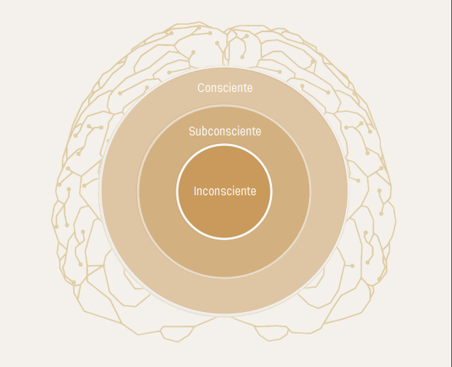

O que é hipnose
Modelo da mente
A mente
O fator crítico
Agora ficou claro o que é hipnose?
Tratamento com a hipnoterapia
A hipnoterapia é para você?
Transforme sua vida para sempre
Início da sessão
Como será no dia?
Quais sintomas podem ser tratados?
Principais mitos
Sobre mim
O que é hipnose?
É um estado natural da nossa mente. Isso significa que acontece o tempo todo, você não precisa pensar para acontecer. Igual respirar é natural. Somos hipnotizados a todo momento e nem percebemos. Um ótimo exemplo é ao assistir a um filme e você sente alegria, medo, raiva ou tristeza. Você sabe que o filme não é real, mas reage a ele como se fosse. Esse é um estado hipnótico. Para entender a fundo a hipnose, é preciso te explicar alguns conceitos-chave. O primeiro conceito que deve ficar claro é como a nossa mente funciona. Segundo o modelo de Gerald Kein, ela se divide em 3 partes. Consciente, subconsciente e inconsciente. A Mente inconsciente é a responsável por nos manter vivos. Ela que mantém os sistemas nervosos autônomo e imunológico em perfeito funcionamento. Apesar de essencial, ela é a menos importante para a hipnose, já que não a acessamos.
Modelo da mente
A mente
A mente consciente é onde você passa a maioria do seu tempo. Uma de suas funções é perceber um problema e achar um jeito de resolvê-lo. Ela é também a responsável pelas justificativas que tentamos dar para nossas escolhas. A nossa memória funcional - aquela que guarda nosso nome, CPF, etc. — também é função dessa parte da nossa mente. Por último, é na mente consciente que fica a nossa força de vontade. Infelizmente, na maioria das pessoas, essa força é muito mais fraca do que gostaríamos. Precisamos estar realmente motivados para ela funcionar como desejamos. A parte mais importante da nossa mente é, sem dúvida, o nosso subconsciente. Ele representa 95% de todas as funções mentais. É nele que está o real EU. Para qualquer sugestão ser aceita, é ali que ela deve ser trabalhada. Acontece que o subconsciente detesta gastar energia. Assim, ele só aceita a sugestão que já está acostumado. O subconsciente conta com a ajuda do "FATOR CRÍTICO", uma barreira que fica na nossa mente consciente e age em parceria com ele a fim de impedir gastos energéticos desnecessários.
O fator crítico
Como funciona? Se a sugestão dada for natural para o seu subconsciente, o fator crítico deixa passar. Agora, se a sugestão for diferente do que estamos acostumados, o que geraria um gasto grande e desnecessário de energia, essa barreira se fecha e tudo permanece igual! Eis o motivo pelo qual é tão difícil mudar usando só a força de vontade. Porque o fator crítico, para impedir o gasto de energia do subconsciente, não deixa a sugestão de mudança chegar até ele. Então, a HIPNOSE é atravessar o fator crítico da mente consciente e estabelecer no subconsciente um pensamento ou sentimento exclusivo e aceitável!
Agora ficou claro o que é hipnose?
Agora ficou claro o que é hipnose certo? Durante o processo, o hipnoterapeuta usa técnicas que abrem uma brecha no FATOR CRÍTICO, permitindo acessar o subconsciente e sugerir novos padrões. O hipnoterapeuta dará sempre sugestões exclusivas e aceitáveis! Exclusivas: são feitas especificamente para cada cliente. Aceitáveis: o cliente tem que achar que faz sentido. Hipnose é permissão, ou seja, você precisa querer, se permitir e seguir as instruções para que todo processo ocorra e a hipnoterapia seja realizada.
Tratamento com a hipnoterapia
Atenção! Há algumas coisas muito importantes que devem ser esclarecidas antes de um tratamento com a hipnoterapia Para dar certo, é necessária uma atitude positiva na hora da sugestão: "Gosto dessa ideia e sei que vai dar certo" É imprescindível haver TOTAL confiança entre o cliente e o hipnoterapeuta. Não tenha receio de fazer as perguntas que tiver vontade, até mesmo as que achar bobas. Tire TODAS as suas dúvidas antes do processo começar! Só faça o tratamento se sentir segurança. A conexão e confiança entre cliente e hipnoterapeuta são essenciais para o sucesso do processo. Hipnoterapia = Autorresponsabilidade. A hipnose pressupõe permissibilidade. Toda hipnose é uma auto-hipnose. O hipnoterapeuta é o guia do processo, que necessita da permissão do indivíduo para acontecer. Quem é responsável pela melhora é o próprio sujeito. Somente ele, com a atitude mental correta, pode definitivamente ressignificar os eventos e assumir o controle da sua vida! Por que não mudamos? O nosso comportamento é fruto de nossas programações. Você já se percebeu fazendo o oposto do desejado? Já teve dificuldades em conquistar objetivos por estar sempre procrastinando ou por não se achar merecedor? Em algum momento da sua vida percebeu estar se autossabotando? Esses são apenas alguns exemplos de como funciona a nossa mente subconsciente. Passamos uma vida aprendendo a ser do jeito que somos. É a nossa programação mental. Como assim, PROGRAMAÇÃO? Desde a gestação, tudo por que passamos fica gravado na nossa mente subconsciente. A partir dos 3 meses de gestação, começamos a ser programados pela maneira que percebemos tudo que acontece ao nosso redor. Todos os eventos nos impactam de alguma forma, ainda mais até os 6 anos, quando o fator crítico ainda não está 100% formado. A boa notícia é que, com a hipnose, é possível retornar ao evento inicial e mudar a percepção do fato que gerou nosso sintoma!
A hipnoterapia é para você?
A Hipnoterapia ajuda toda pessoa que queira mudar e siga as instruções. Isso é tudo que VOCÊ tem a fazer. Acreditamos que o sintoma que tanto te incomoda teve uma causa, um início de cunho emocional, que ficou gravada no seu subconsciente. Então, em hipnose, podemos regredir diretamente na época em que o problema começou, e alterar essa programação.
Transforme sua vida para sempre
Tudo que nos impacta de forma profunda passa a ser verdade incontestável para o nosso subconsciente, se tornando gatilhos de comportamento. O objetivo da hipnoterapia é encontrar o gatilho desse problema, subconscientemente, ressignificá-lo e restaurar o estado original da sua mente, livrando você do sintoma e estabelecendo uma nova programação. Adotando novas atitudes mentais, essa programação ficará com você pelo resto da sua VIDA.
Início da sessão
O hipnoterapeuta precisa coletar o maior número de informações sobre o que está acontecendo com você. Qual a sua maior dor? Previamente à sessão de hipnoterapia propriamente dita, deve ser feita uma consulta de orientação, na qual é feita a ficha cadastral com os dados e uma entrevista detalhada. Nesse momento, também haverá uma conversa inicial, em que o cliente pode esclarecer TODAS as dúvidas e eventuais medos que ainda não tenham sido esclarecidos.
Como será no dia?
No dia da sessão o hipnoterapeuta te guiará até o momento que sentiu aquela sensação pela primeira vez. A causa do que te incomoda hoje reside numa emoção vivenciada no seu passado. Ao buscar essa emoção, conseguimos voltar à origem! Buscamos a emoção relacionada ao sintoma e voltamos ao momento inicial. A regressão à causa é feita para auxiliar o cliente a mudar a percepção dos fatos e ressignifica- los definitivamente. Esse é um momento libertador! O tratamento consiste em 3 encontros. A consulta de orientação, a sessão e o retorno. Falamos tanto em assumir o controle, pois quando temos um sintoma indesejado, é ele que, de verdade, nos controla! Após a ressignificação dos fatos, passamos para as sugestões diretas. No estado de hipnose, como mencionei aqui, há uma brecha no fator crítico e passamos a ter acesso ao seu subconsciente. Desta forma, finalmente, conseguimos reprogramar a sua mente para que você assuma de vez o controle e desenvolva todo seu potencial!
Quais sintomas podem ser tratados?
Ansiedade, fobias, medos, obesidade, compulsão, intolerância alimentar, transtorno alimentar, depressão, controle da dor, insegurança, autoconfiança, timidez, foco, vícios, bruxismo, oscilações de humor, estresse, autocontrole, personalidade violenta, roer unhas, libido, insônia, doenças de pele, diabetes tipo 2, enxaqueca, impotência, alergias, procrastinação, prosperidade, etc.
Principais mitos
A pessoa corre o risco de não voltar? Não, ela não corre este risco porquê ela não vai para lugar nenhum. Ela continua exatamente no mesmo lugar. A pessoa perde a consciência? Não, durante o processo a pessoa fica consciente o tempo todo e se lembra de tudo A pessoa pode contar algo que ninguém deveria saber? Tipo senha de banco? Se você está consciente o tempo todo, você escolhe o que vai dizer. Ninguém irá pedir para falar nada que não seja relacionado a resolução do seu sintoma. A pessoa perde o controle? Não, a pessoa fica com total controle durante toda a sessão. Só que suas emoções ficam mais claras e o pensamento fica mais organizado.
Sobre mim
Logo que me casei tive minhas filhas e não voltei mais para a área financeira. Decidida que ficaria com elas por um tempo, me dediquei a maternidade em tempo integral. Passaram se 8 anos e comecei a buscar de algo que fizesse um sentido maior na minha vida, logo após entrar para o mundo de autoconhecimento em 2019, eu descobri a Hipnoterapia. Comecei acompanhar alguns hipnoterapeutas e fui me interessando cada vez mais por este assunto. Em 2020 passei o ano todo estudando sobre este assunto e em paralelo resolvi me arriscar e comecei a empreender com alimentação saudável e logo fui estudar gastronomia funcional. Feliz com minha escolha, porém a hipnoterapia não saia da minha cabeça, desde 2019 ao descobrir tudo que ela pode tratar. Me apaixonei pelo poder que a nossa mente possui, me formei como Hipnoterapia, decidida a auxiliar minha mãe com depressão, que logo passar pela primeira sessão já melhorou 80% da depressão. Em paralelo continuei empreendendo no negócio de alimentação saudável. Após três anos como chefe funcional, ao perceber a dor do meu público, senti uma grande necessidade de auxiliar as pessoas que comem com base no emocional. Atualmente, atendo como hipnoterapeuta, guiando as pessoas a vencerem a ansiedade, compulsão alimentar, emagrecimento, baixa autoestima, insegurança, traumas emocionais, procrastinação e auxiliando as pessoas a serem mais leves na vida.